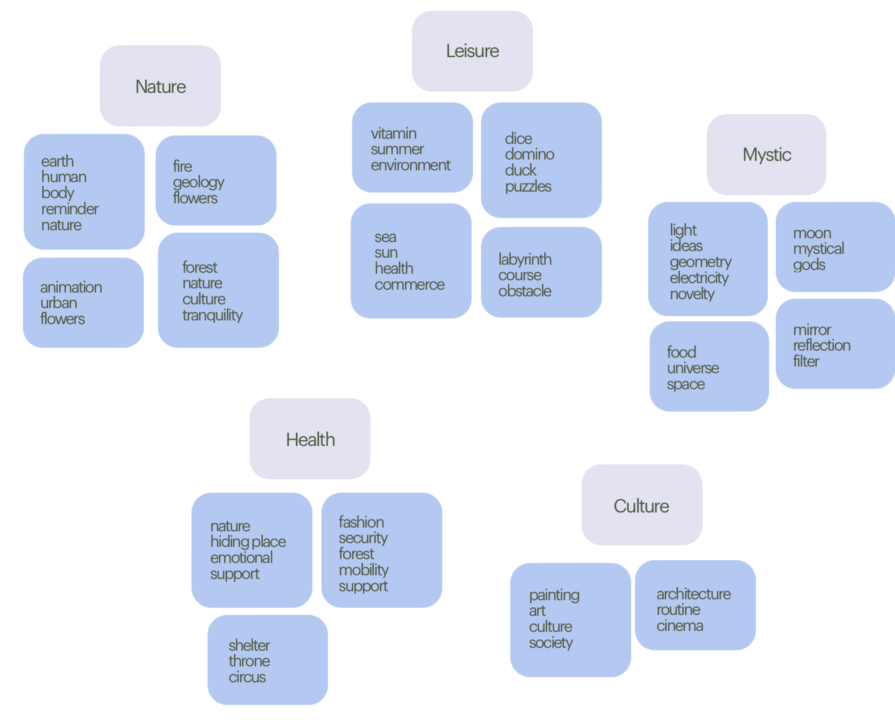
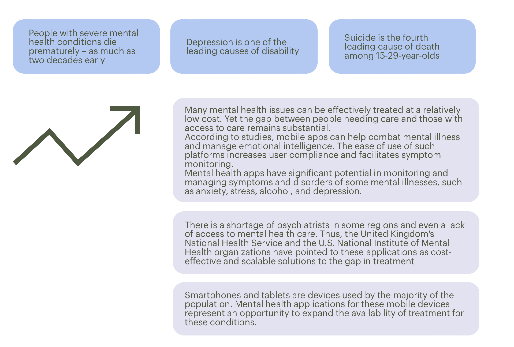

The Process
1. Research
2. Synthesis
3. Ideation
4. Prototyping
We started by having a brainstorming session to explore problems for our project. Each team member wrote down words that came to mind on a Post-It note. We repeated the process several times, resulting in a few ideas. After, we observed some similarities between the generated ideas and decided to group them by themes.
Within the themes we got, we chose to move forward with health. Since it is a theme we had never worked on before, we thought it would be a good challenge to develop our research and design thinking skills. Within the various areas of health, we decided to follow with mental health.
1. Research
In recent years, there has been increasing acknowledgment of the importance of mental health in achieving global development goals. According to World Health Organization:
After research it became clear what the problem to work on was and, consequently, its goal.